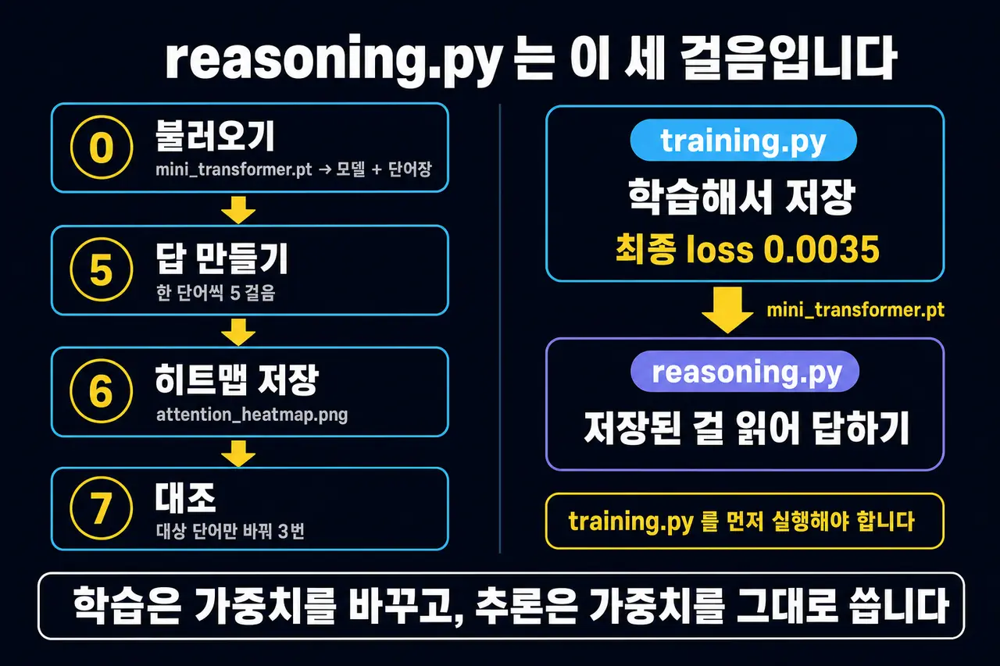
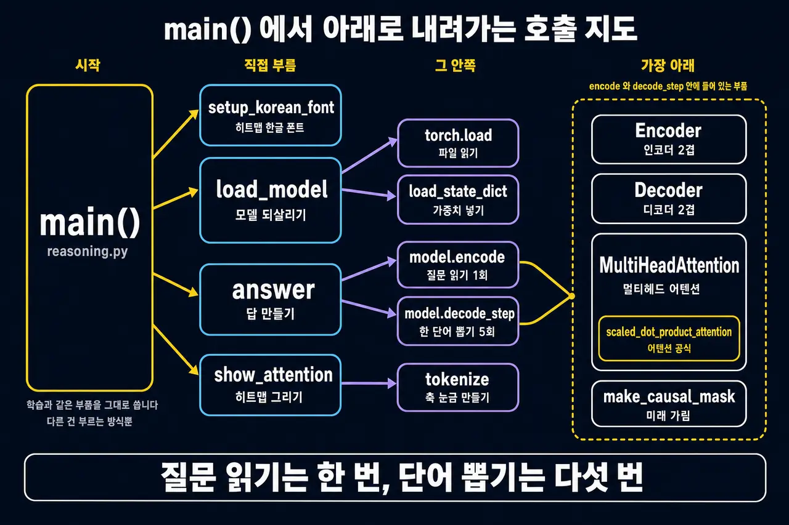
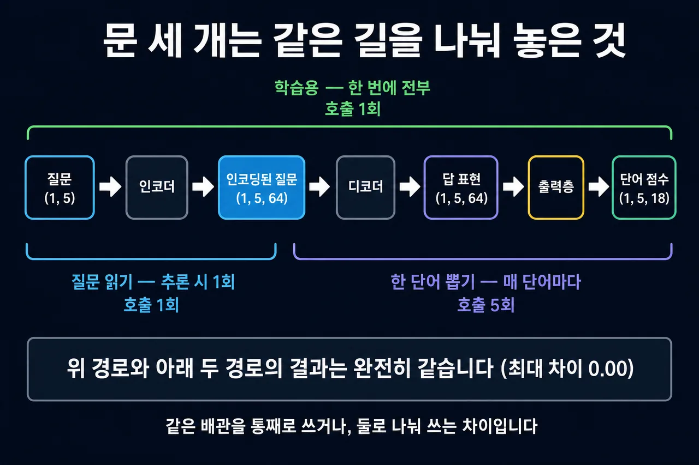
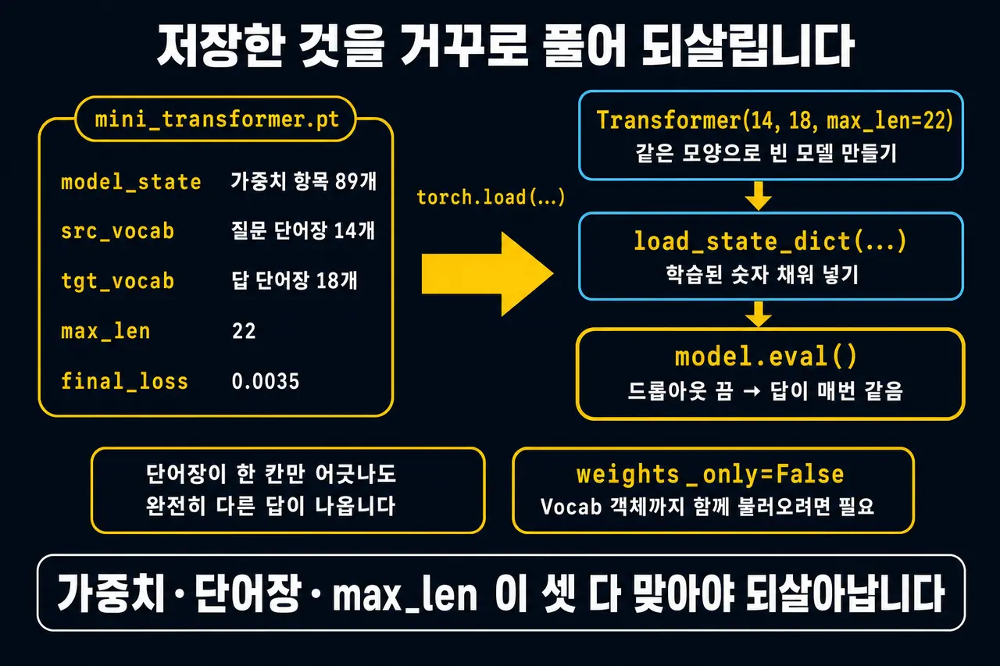
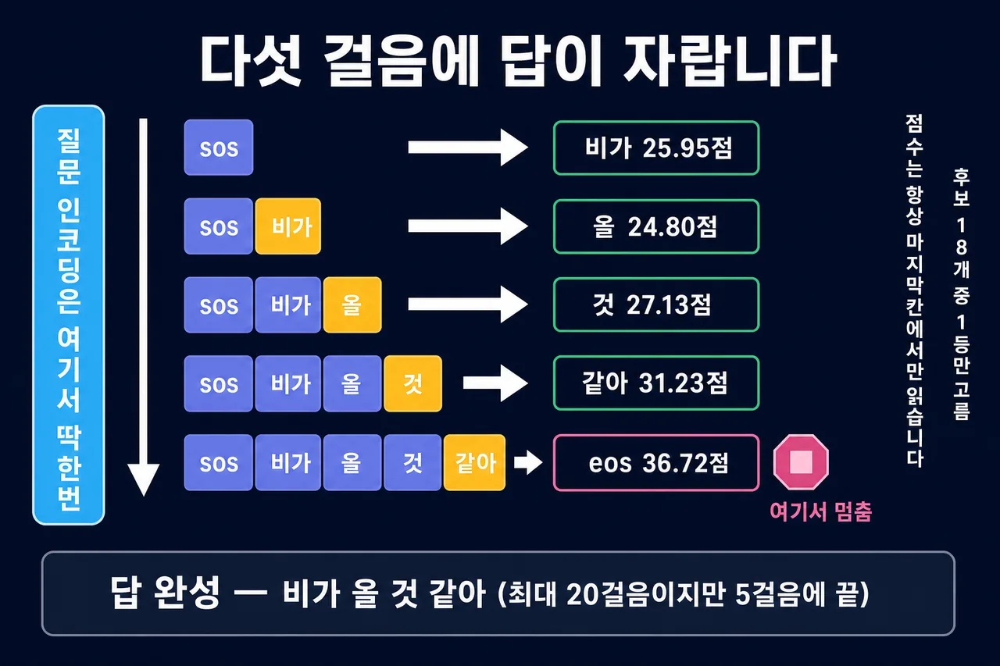
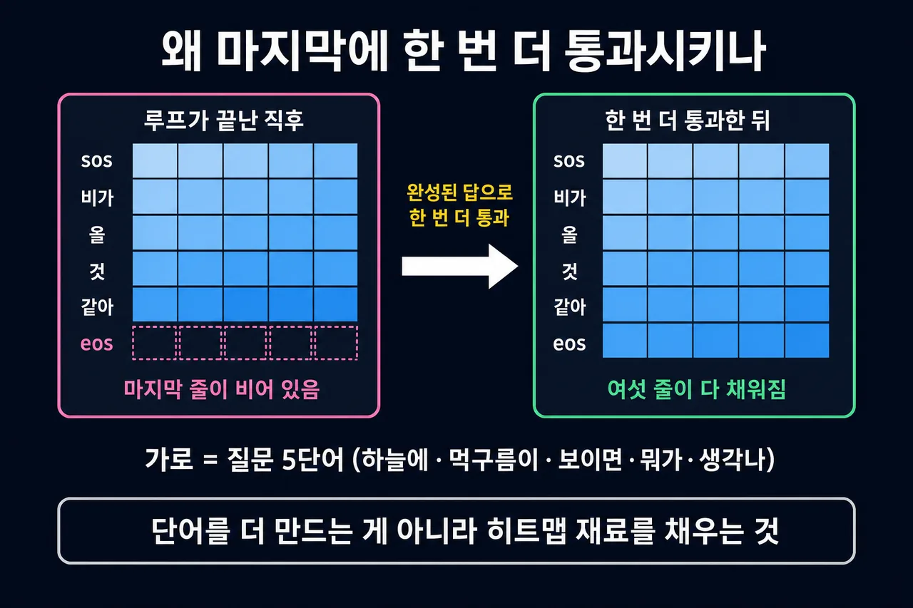
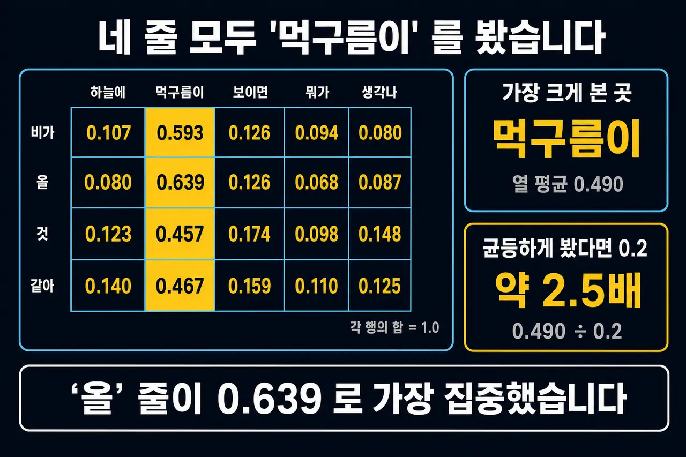
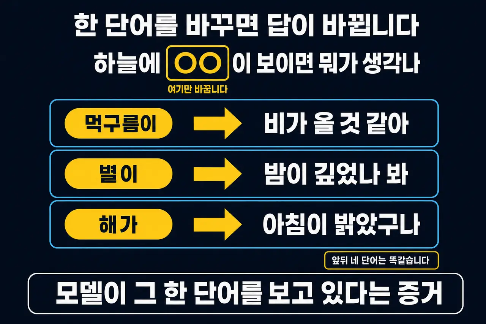
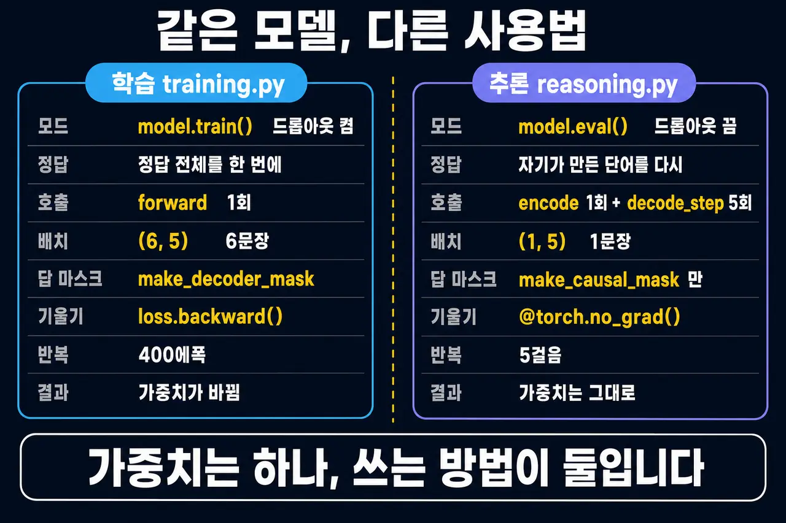

이 페이지 읽는 법
① 위에서 아래로 그림만
1부 → 6부 순서대로 그림만 봐도 전체 흐름이 이어집니다.
② 재사용 배지가 붙은 그림
추론은 학습과 같은 부품을 씁니다. 그래서 학습 편·부품 편의 그림을 그대로 다시 씁니다.
③ 먼저 학습 편을 보면 좋습니다
training.py 처리 과정 을 먼저 보면 이 페이지가 훨씬 쉽습니다.
🔗두 파일의 관계 한 줄:
training.py 가 mini_transformer.pt 를 쓰고,
reasoning.py 가 그 파일을 읽습니다.
그래서 실행 순서를 반드시 지켜야 합니다.
큰 그림 — 저장된 것을 어떻게 쓰나
가중치는 하나도 바뀌지 않습니다. 쓰는 방법만 다릅니다.
01 reasoning.py 의 세 걸음 reasoning.py · main()
def main():
setup_korean_font() # 히트맵 축 한글 깨짐 방지
model, src_vocab, tgt_vocab = load_model()
# ── 5단계: 답을 한 단어씩 만들어 보기 ──
# ── 6단계: 어텐션 히트맵 ──
# ── 7단계: 키워드를 바꿔 답 비교하기 ──
오른쪽 두 카드를 보세요 — training.py 는 가중치를 바꾸고, reasoning.py 는 바뀐 가중치를 그대로 씁니다. 그래서 mini_transformer.pt 가 없으면 FileNotFoundError 로 "먼저 python training.py 를 실행하세요"라고 알려 줍니다.
02 main() 에서 아래로 내려가는 호출 지도 두 파일 전체
from mini_transformer import (
Transformer, answer, setup_korean_font, show_attention, tokenize,
)
호출 횟수가 다른 것에 주목하세요: model.encode 는 1회, model.decode_step 은 5회. 질문은 안 바뀌지만 답은 한 단어씩 자라니까요.
03 문 세 개는 같은 길을 나눠 놓은 것 Transformer · forward / encode / decode_step 재사용
def forward(self, src, tgt, src_mask, tgt_mask): # 학습용 — 한 번에 전부
return self.out(self.decoder(tgt, self.encoder(src, src_mask), tgt_mask, src_mask))
def encode(self, src, src_mask): # 추론용 1회
return self.encoder(src, src_mask)
def decode_step(self, tgt, enc, tgt_mask, src_mask): # 추론용 반복
return self.out(self.decoder(tgt, enc, tgt_mask, src_mask))
두 경로의 결과는 완전히 같습니다(최대 차이 0.00) — 나눠 쓰는 이유는 결과를 바꾸려는 게 아니라, 질문 인코딩을 5번 반복하지 않으려는 것입니다.
불러오기 — 파일 하나에서 모델 되살리기
가중치·단어장·max_len 이 셋 다 맞아야 되살아납니다.
04 저장한 것을 거꾸로 풀기 reasoning.py · load_model()
ckpt = torch.load(ckpt_path, map_location="cpu", weights_only=False)
src_vocab, tgt_vocab = ckpt["src_vocab"], ckpt["tgt_vocab"]
model = Transformer(len(src_vocab), len(tgt_vocab), max_len=ckpt["max_len"])
model.load_state_dict(ckpt["model_state"])
model.eval() # 드롭아웃 끔 → 답이 매번 같음
weights_only=False 가 필요한 이유는 저장물 안에 우리가 만든 Vocab 객체가 들어 있기 때문입니다(우리가 만든 파일이라 안전합니다).
05 저장하는 쪽과 나란히 보기 training.py · torch.save 재사용

왜 단어장까지 같이 저장했는지가 여기서 드러납니다 — 번호 체계가 한 칸이라도 어긋나면 같은 가중치라도 완전히 다른 답이 나옵니다. max_len 도 마찬가지로, 값이 다르면 위치인코딩 버퍼 모양이 안 맞아 load_state_dict 자체가 실패합니다.
답 만들기 — <sos> 부터 끝말잇기
질문은 한 번만 읽고, 답은 한 단어씩 자라납니다. 최대 20걸음이지만 5걸음에 끝납니다.
06 다섯 걸음에 답이 자란다 mini_transformer.py · answer() 재사용
@torch.no_grad()
def answer(model, sv, tv, question, max_len=20):
model.eval()
src = torch.tensor([sv.encode(question, add_special=False)]) # (1, 5)
src_mask = make_padding_mask(src, sv.pad_id) # (1, 1, 1, 5)
enc = model.encode(src, src_mask) # (1, 5, 64) — 딱 한 번
gen, steps = [tv.sos_id], []
for _ in range(max_len):
tgt = torch.tensor([gen]) # (1, 현재길이)
tgt_mask = make_causal_mask(tgt.size(1), tgt.device) # 패딩 마스크는 불필요
logits = model.decode_step(tgt, enc, tgt_mask, src_mask)
nxt = logits[0, -1].argmax().item() # 마지막 칸의 1등
gen.append(nxt)
if nxt == tv.eos_id: break # 여기서 멈춤
매 걸음 마지막 칸만 읽습니다(logits[0, -1]). 앞쪽 칸들은 이미 확정된 단어의 점수라 볼 필요가 없죠. 후보 18개 중 1등만 고르는 것이 greedy 입니다.
1등과 2등 점수 차가 큽니다 — 1걸음에서 '비가' 25.95 vs '아침이' 13.78. 400에폭을 돌린 결과라 확률로 보면 사실상 1.0 입니다.
걸음마다 텐서가 한 칸씩 자란다 (실측)
| 걸음 | tgt | 마스크 | True | logits | 1등 | 점수 | 2등 | 점수 |
|---|---|---|---|---|---|---|---|---|
| 1 | (1, 1) | (1,1,1,1) | 1 | (1, 1, 18) | 비가 | 25.95 | 아침이 | 13.78 |
| 2 | (1, 2) | (1,1,2,2) | 3 | (1, 2, 18) | 올 | 24.80 | 그쳤나 | 12.91 |
| 3 | (1, 3) | (1,1,3,3) | 6 | (1, 3, 18) | 것 | 27.13 | 올 | 16.09 |
| 4 | (1, 4) | (1,1,4,4) | 10 | (1, 4, 18) | 같아 | 31.23 | <eos> | 18.65 |
| 5 | (1, 5) | (1,1,5,5) | 15 | (1, 5, 18) | <eos> | 36.72 | 같아 | 24.46 |
⚠️학습과 다른 점 두 가지가 이 표에 있습니다.
첫째, 배치축이 6 이 아니라 1 입니다 — 한 문장씩 처리하니까요.
둘째, 마스크가 make_decoder_mask 가 아니라
make_causal_mask 뿐입니다 —
필요한 길이만 키워 가므로 <pad> 가 끼어들 일이 아예 없습니다.
🐢매 걸음 처음부터 다시 계산합니다.
3걸음째에도 <sos> 비가 올 전체를 통째로 다시 통과시킵니다.
실무 모델은 KV 캐시로 이 낭비를 없애지만, 여기서는 코드를 읽기 쉽게 두려고 일부러 단순하게 두었습니다.
07 decode_step 안쪽은 학습과 똑같다 Decoder · DecoderLayer 재사용

다만 들어가는 값의 모양이 다릅니다 — 학습에서는 답이 (6, 5) 로 한꺼번에 들어갔지만, 추론에서는 (1, 1) → (1, 5) 로 한 칸씩 자랍니다.
크로스 어텐션의 enc 는 그 5걸음 동안 단 한 번도 바뀌지 않습니다 — 3부 첫 그림에서 인코딩을 한 번만 하는 이유가 바로 이것입니다.
08 그 안의 어텐션도 그대로 MultiHeadAttention · scaled_dot_product_attention 재사용

그림의 shape 은 학습 기준 (6, …) 입니다. 추론에서는 배치축이 1 이므로 (1, 4, 5, 16) 처럼 읽으시면 됩니다.
추론에서는 드롭아웃이 꺼져 있어(eval()) 비율표의 행 합이 정확히 1.0 이 됩니다 — 학습 모드로 히트맵을 그리면 이 합이 1 이 안 됩니다.
히트맵 — 모델이 어디를 봤나
이 페이지의 결론입니다. '먹구름이' 열이 가장 밝으면 성공입니다.
09 왜 마지막에 한 번 더 통과시키나 mini_transformer.py · answer() 끝부분 재사용
# 완성된 답 전체를 한 번 더 통과시켜 히트맵 세로축을 채웁니다
tgt = torch.tensor([gen]); tgt_mask = make_causal_mask(tgt.size(1), tgt.device)
model.decode_step(tgt, enc, tgt_mask, src_mask) # (1, 6) / (1, 1, 6, 6)
cross = model.decoder.layers[-1].cross_attn.last_attn_weights[0].mean(0)
헤드 4개의 비율표를 평균 냅니다 — 원본 (1, 4, 6, 5) 에서 .mean(0) 으로 헤드축을 접어 (6, 5) 를 얻습니다. 가로 5칸은 질문 5단어, 세로 6칸은 답 6칸입니다.
10 네 줄 모두 '먹구름이' 를 봤다 mini_transformer.py · show_attention()
w = cross[:len(ans_toks), :len(qs)].numpy() # (4, 5) 로 잘라내기
plt.imshow(w, aspect="auto", cmap="viridis") # 낮음=보라, 높음=노랑
# reasoning.py 의 검산 — 어느 질문 토큰을 가장 크게 봤나
top = cross[: len(qs), : len(qs)].mean(0).argmax().item()
균등하게 봤다면 1/5 = 0.2 일 텐데 0.490 입니다 — 약 2.5배. 특히 '올' 줄이 0.639 로 가장 집중했습니다.
각 행의 합은 정확히 1.0 입니다. 세로축 라벨은 "그 단어를 만들 때"로 읽으세요 — 첫 줄은 <sos> 자리에서 '비가'를 뽑을 때 쓴 비율입니다.
| 답 토큰 ↓ / 질문 토큰 → | 하늘에 | 먹구름이 | 보이면 | 뭐가 | 생각나 |
|---|---|---|---|---|---|
| 비가 | 0.107 | 0.593 | 0.126 | 0.094 | 0.080 |
| 올 | 0.080 | 0.639 | 0.126 | 0.068 | 0.087 |
| 것 | 0.123 | 0.457 | 0.174 | 0.098 | 0.148 |
| 같아 | 0.140 | 0.467 | 0.159 | 0.110 | 0.125 |
| 열 평균 (검산) | 0.121 | 0.490 | 0.160 | 0.103 | 0.125 |
🔍코드를 꼼꼼히 읽으신 분을 위한 한 줄:
검산 줄의 cross[: len(qs), : len(qs)] 는 세로축까지
질문 길이로 자릅니다. 이 예제에서는 질문 5단어와 생성 5걸음이 우연히 같아서 문제가 없지만,
엄밀하게는 세로축은 답 길이로 자르는 것이 맞습니다.
대조 — 정말 그 단어를 보고 있나
히트맵이 밝은 것만으로는 부족합니다. 단어를 바꿔 답이 따라 바뀌는지 확인합니다.
11 한 단어를 바꾸면 답이 바뀐다 reasoning.py · CONTRAST_QUESTIONS
for q in CONTRAST_QUESTIONS:
_, a, _ = answer(model, src_vocab, tgt_vocab, q) # 답만 쓰고 나머지는 버림
print(f" {tokenize(q)[1]:<6} → {a}") # 두 번째 토큰 = 바뀌는 단어
히트맵 + 대조, 두 증거가 같은 곳을 가리킵니다 — "모델이 그 한 단어를 보고 답을 고른다"는 것을 눈으로도(4부) 결과로도(5부) 확인한 것입니다.
그림의 ○○ 상자는 조사까지 포함한 한 단어 자리로 읽으세요 — 아래 노란 알약이 '먹구름이'·'별이'·'해가'처럼 tokenize() 가 실제로 만드는 토큰 그대로입니다.
학습과 추론 — 같은 모델, 다른 사용법
두 페이지를 다 본 뒤 이 그림 하나로 정리하시면 됩니다.
12 여덟 가지가 다르다 training.py ↔ reasoning.py

가장 큰 차이는 두 번째 줄입니다 — 학습은 정답을 보여 주고 다음 단어를 맞히게 하지만 (티처 포싱), 추론은 정답이 없으니 자기가 만든 단어를 다시 넣습니다(자기회귀). 그래서 학습은 한 번에 끝나고, 추론은 단어 수만큼 반복해야 합니다.
| 항목 | 학습 training.py | 추론 reasoning.py |
|---|---|---|
| 모드 | model.train() | model.eval() |
| 정답 제공 | 티처 포싱 — 정답 전체를 한 번에 | 자기회귀 — 자기가 만든 단어를 다시 |
| 모델 호출 문 | forward ×1 | encode ×1 + decode_step ×5 |
| 배치 | (6, 5) — 6문장 | (1, 5) — 1문장 |
| 답 마스크 | make_decoder_mask | make_causal_mask |
| 기울기 | loss.backward() | @torch.no_grad() |
| 반복 | 400에폭 | 5걸음 |
| 결과 | 가중치가 바뀜 | 가중치는 그대로, 답만 나옴 |
한 장 요약
| 단계 | 코드 | 결과 (실측) |
|---|---|---|
| 불러오기 | torch.load(...) | 키 5개 · 최종 loss 0.0035 |
| 모델 복원 | Transformer(14, 18, max_len=22) | 가중치 항목 89개 |
| 모드 전환 | model.eval() | 드롭아웃 끔 → 결정적 |
| 질문 인코딩 | model.encode(...) | (1, 5, 64) · 1회만 |
| 답 생성 | model.decode_step(...) | 5회 (최대 20) |
| 완성된 답 | tv.decode(gen) | 비가 올 것 같아 |
| 히트맵 재료 | last_attn_weights[0].mean(0) | (1,4,6,5) → (6, 5) |
| 가장 본 단어 | mean(0).argmax() | 먹구름이 · 0.490 |
| 대조 | answer(...) ×3 | 답 3개 모두 다름 |
🌧️한 문장으로:
파일 하나에서 모델과 단어장을 되살려 eval() 로 바꾸고,
질문을 한 번만 인코딩한 뒤 <sos> 부터 5걸음 끝말잇기로
"비가 올 것 같아"를 만들고, 그 동안 모델이 '먹구름이'를 0.490(균등의 2.5배) 로 봤다는 것을
히트맵과 대조 두 방법으로 확인합니다.